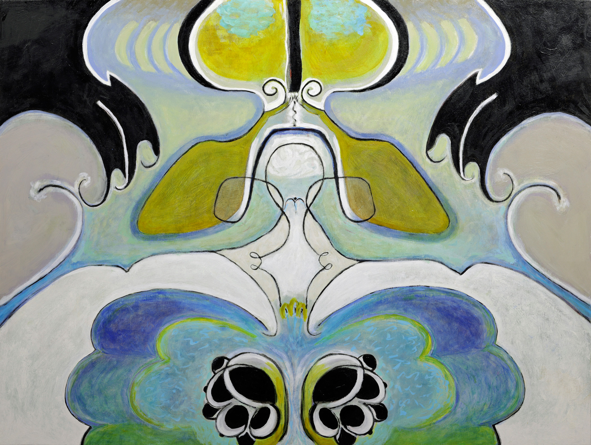
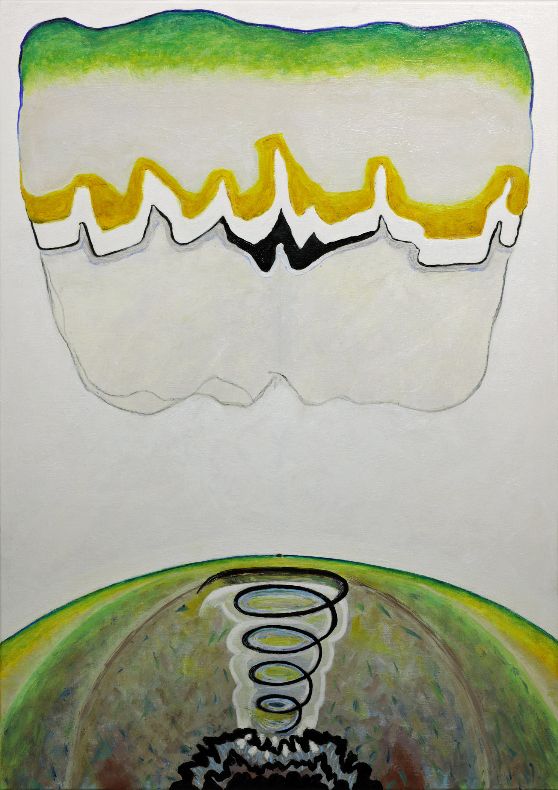
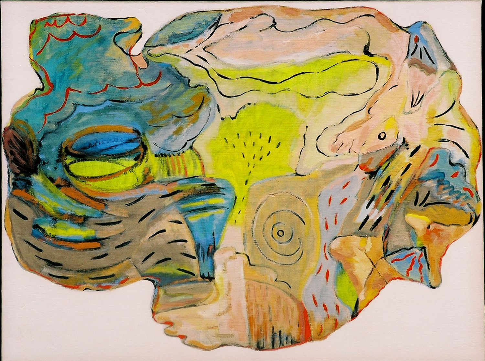
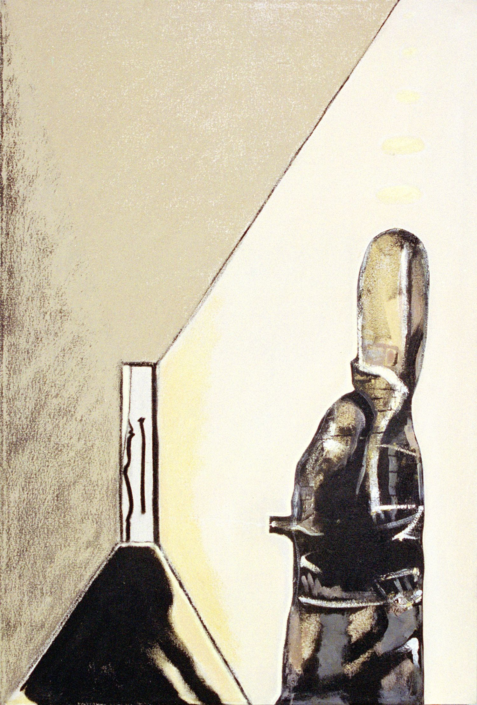
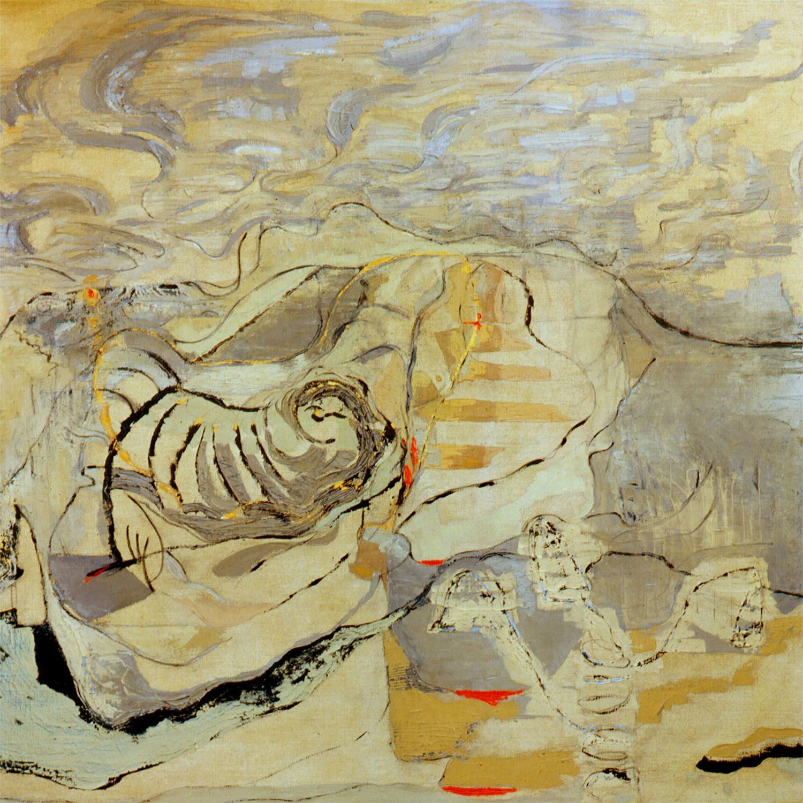
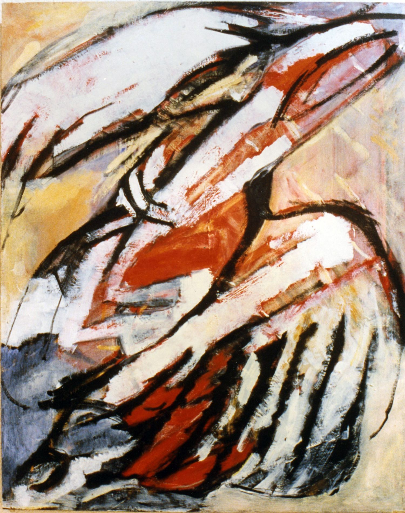

Geometrías en altamar
pintura, serie
Crecimiento
pintura, serie
Recortes: de las islas
pintura, serie
Partida, Ausencia, Retorno
pintura, serie
Icons
pintura, serie
Abnormal Fobia Pigmentation
pintura, serie
Ciclos
pintura, serie
Autoretratos en amarillo, azul y rojo
pintura, serie
Autoretrato en Krieglach
pintura, serie
Geometrías en altamar 3/6
2022, oil on wood panel, 50x70cm
Geometrías en altamar 1/6
2022, oil on wood panel, 50x60cm
Geometrías en altamar 2/6
20222, oil on wood panel, 60x60cm

Geometrías en altamar 4/6
2022, oil on wood panel, 60x80cm
Geometrías en altamar 5/6
20222, oil on wood panel, 60x60cm

Geometrías en altamar 6/6
2022, oil on wood panel, 70x50cm
Previous
Next
Rain
Growth series
2016, oil on linen, 26″x 34¼”
Cloud
Growth series
2016, oil on linen, 30″x36¼”
Heat
Growth series
2016, oil on linen, 26″x 26″
Seed
Growth series
2016, oil on linen, 26″x 26″
Previous
Next
Cabo Engaño
Recortes: de las islas
2005, oil on linen canvas, 32″x24″
Bahía Perla
Recortes: de las islas
2005, oil on linen canvas, 32″x24″
Playa Caracoles
Recortes: de las islas
2005, oil on linen canvas, 32″x24″
Río Coco
Recortes: de las islas
2005, oil on linen canvas, 32″x24″

Cuando el río suena
Recortes: de las islas
2005, oil on linen canvas, 24″x32″
Previous
Next
Triptych Partida, Ausencia, Retorno 1/3
1996, oil crayons and acrylic on cotton canvas, 38″ x 26″
Triptych Partida, Ausencia, Retorno 2/3
1996, oil crayons and acrylic on cotton canvas, 38″ x 26″

Triptych Partida, Ausencia, Retorno 3/3
1996, oil crayons and acrylic on cotton canvas, 38″ x 26″
Previous
Next
Japonesa
Triptych Icons
2003
Collection of the Cooperativa de Seguros Múltiples, San Juan, P.R.
Pirata
Triptych Icons
2002
Maja
Triptych Icons
2003, oil on linen canvas, 38″ x 26″
Previous
Next
Melancholia
Abnormal Fobia Pigmentation
1997, oil on linen canvas, 6’x6′
The last supper
Abnormal Fobia Pigmentation
1998, oil on linen canvas, (1)30″x72″, (12)16″x16″
Collection of the Museo de Arte de Bayamón, Puerto Rico
Ánima Sola
Abnormal Fobia Pigmentation
1997, oil on linen canvas, 6’x30″ – 1,82 mt x 76cm
En el jardín de las delicias, 1/4
Abnormal Fobia Pigmentation
1996, oil on linen canvas, 30″x36″
Birth
Abnormal Fobia Pigmentation
1998, oil on linen canvas, 6’x9′, 1,82 mt x 2,75 mt

Annunciation
Abnormal Fobia Pigmentation
1998, oil on linen canvas, 6’x6′, 1,82 mt x 1,82 mt
To die for
Abnormal Fobia Pigmentation
1997, oil on linen canvas, 30″x6′ – 76cm x 1,82 mt
Previous
Next
Maternidad
12 Óleos series
1993, oil on linen canvas, 39″ x 32″
In the womb
12 Óleos series
1993, oil on linen canvas, 32″ x 39″
Furia
12 Óleos series
1992, oil on linen canvas, 39″ x 32″
Los tres Yoes
12 Óleos series
1993, oil on linen canvas, 32″ x 39″
Autorretrato en El Albaizín
12 Óleos series
1993, oil on linen canvas, 32″ x 39″
Anunciación
12 Óleos series
1993, oil on linen canvas, 39″ x 32″
Máscara de vejigante
12 Óleos series
1993, oil on linen canvas, 32″ x 39″
Huida
12 Óleos series
1992, oil on linen canvas, 39″ x 32″
El misterio
12 Óleos series
1993, oil on linen canvas, 32″ x 39″

Pájaro
12 Óleos series
1993, oil on linen canvas, 39″ x 32″
Previous
Next
Self portrait in red 1
1985, oil on linen canvas, 45″ x 35″
Self portrait in blue 2
1984, oil on linen canvas, 45″ x 35″
Self portrait in yellow 1
1984, oil on linen canvas, 45″ x 35″
Previous
Next
Self-portrait in Krieglach
1980, oil on masonite, 40″ x 34″
Madonna antes de Madonna
acuarela sobre rag paper, 1980, 8″x10″
Previous
Next